import pandas as pd
import numpy as npIntroduction à la visualisation de données
title: “Introduction to data visualization”
Data visualization (or dataviz) is an essential tool for understanding data and highlighting phenomena from it, as well as for effectively communicating analysis results. However, it is a field that goes far beyond mere technical skill: the best visualizations are those that are well-suited to the data they represent and can tell a story from it (data storytelling). This tutorial does not aim to cover the topic in detail but provides an introduction to the main tools available in Python for producing data visualizations.
We will start our exploration with the built-in plotting capabilities in Pandas, which are very simple and therefore perfect for quick data analysis. Then, we will discover Seaborn, a library that allows you to create attractive visualizations with very few lines of code. Both libraries are based on Matplotlib, the comprehensive reference library for visualization in Python, which allows for very advanced customization but is more complex to use, and will therefore not be directly addressed in this tutorial.
Pandas
As we saw in the dedicated tutorial, the Pandas library offers numerous powerful tools for manipulating tabular data. But it is also equipped with built-in tools for visualizing it. In particular, the .plot() method allows for quick visualizations of analyzed data.
The .plot() method
The .plot() method, integrated into Series and DataFrames, simplifies the process of creating charts by allowing standard visualizations to be generated with a single line of code directly from the data structure. Behind the scenes, .plot() calls Matplotlib for the graphical rendering, which means that any chart generated by Pandas can be further customized with Matplotlib functions. This integration offers a balance between convenience for quick visualization tasks and the power of Matplotlib for more extensive customization needs, making .plot() the ideal starting point for data visualization in Python.
Example plots
Even though the .plot() method allows for simple and quick chart generation, the possibilities are vast and depend on the input data. In this section, we provide some standard examples to understand the method’s functionality. For more possibilities, you can refer to the numerous examples in the official documentation.
Let’s generate some synthetic data mimicking cash register data, which we will use as the basis for the charts.
# Configuration for reproducibility
np.random.seed(0)
# Generate a range of dates over a month
dates = pd.date_range(start='2023-01-01', end='2023-01-31', freq='D')
# Simulate cash register data for the month
N_POINTS = 1000
mean_price = 10
std_dev_price = 4
prices = np.random.normal(mean_price, std_dev_price, N_POINTS)
quantities = 10 - 0.5 * prices + np.random.normal(0, 1.5, N_POINTS)
data = {
'Date': np.random.choice(dates, N_POINTS),
'Transaction_ID': np.arange(N_POINTS) + 1,
'COICOP': np.random.choice(['01.1.1', '02.1.1', '03.1.1', '04.1.1'], N_POINTS),
'Store': np.random.choice(['Carrefour', 'Casino', 'Lidl', 'Monoprix'], N_POINTS),
'Price': prices,
'Quantity': quantities
}
# Create the DataFrame
df_cash = pd.DataFrame(data)
# Sort by date for consistency
df_cash = df_cash.sort_values(by='Date').reset_index(drop=True)
# Display the first rows of the cash register data
print(df_cash.head()) Date Transaction_ID COICOP Store Price Quantity
0 2023-01-01 766 02.1.1 Lidl 5.588375 9.151826
1 2023-01-01 32 03.1.1 Lidl 11.512650 4.450210
2 2023-01-01 139 02.1.1 Monoprix 11.584027 6.314805
3 2023-01-01 415 02.1.1 Casino 16.930885 0.861407
4 2023-01-01 418 01.1.1 Casino 10.568247 2.590971Scatter plot
Scatter plots allow for visualizing the relationship between two continuous numerical variables. Let’s illustrate this with the relationship between price and quantities of transactions.
df_cash.plot(x='Quantity', y='Price', kind='scatter')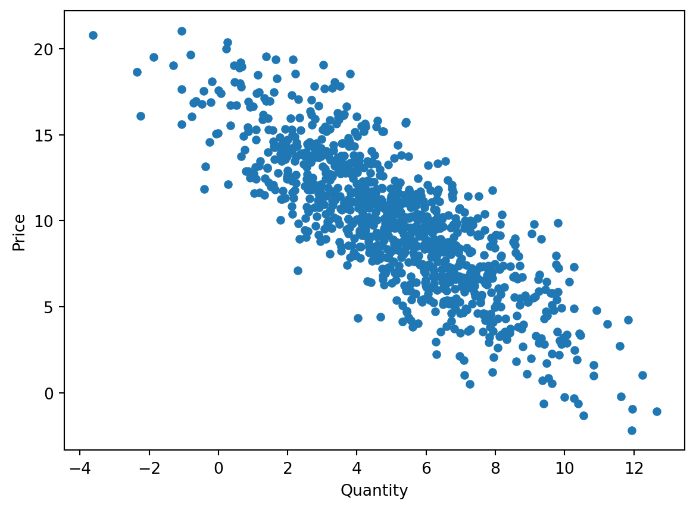
Bar chart
Bar charts are ideal for visually comparing different categories. Here, we use the .value_counts() method to retrieve the frequencies of each category in a Series, and then apply the .plot() method to visualize a bar chart.
df_cash['Store'].value_counts().plot(kind='bar')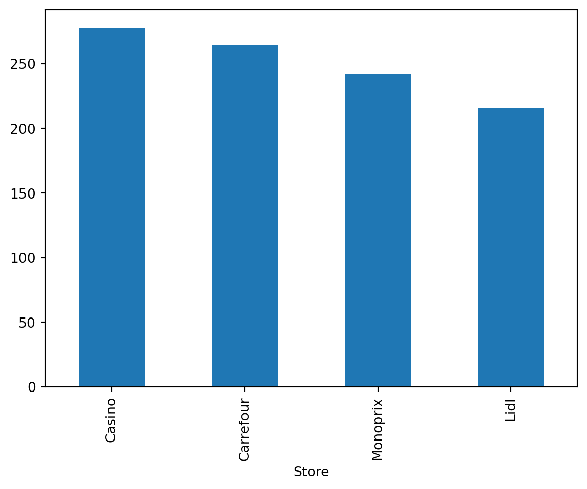
Box plot
The box plot allows for quickly visualizing the dispersion statistics of a statistical series (median, quartiles, min, max) as well as the presence of any outliers.
df_cash['Price'].plot(kind="box")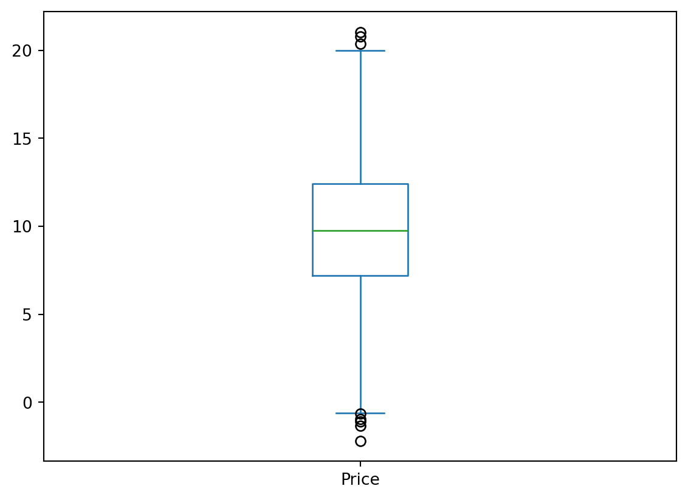
Histogram
Histograms help understand the distribution of a numerical variable. Let’s calculate the histogram of the prices of transactions over the studied period.
df_cash['Price'].plot(kind='hist', bins=20)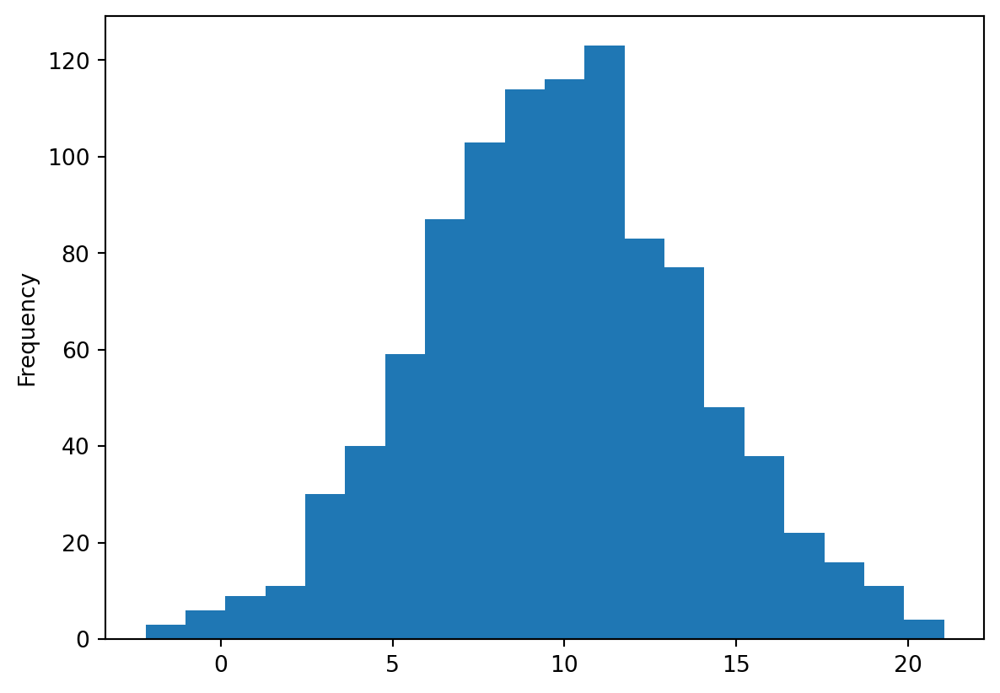
Line plot
df_cash.groupby('Date')['Quantity'].sum().plot(kind='line')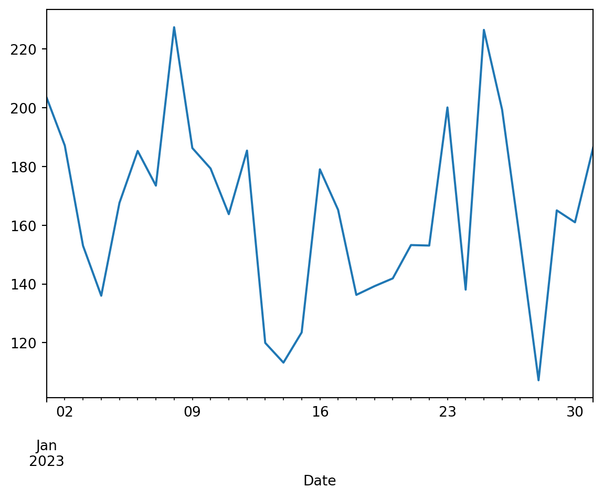
Customization
As mentioned earlier, the built-in plotting functionality in Pandas is actually based on the Matplotlib library, as the .plot() method in Pandas is just a wrapper around the plot() function of Matplotlib. In theory, all the customization possibilities allowed by Matplotlib are available with the charts created this way in Pandas. To access them, you need to import Matplotlib in addition to Pandas.
import matplotlib.pyplot as pltLet’s illustrate some customization possibilities by revisiting one of the previous charts.
df_cash.plot(x='Quantity', y='Price', kind='scatter', color="green", alpha=0.6)
plt.title('Relationship between price and quantity of products')
plt.xlabel('Quantity sold')
plt.ylabel('Price (in €)')Text(0, 0.5, 'Price (in €)')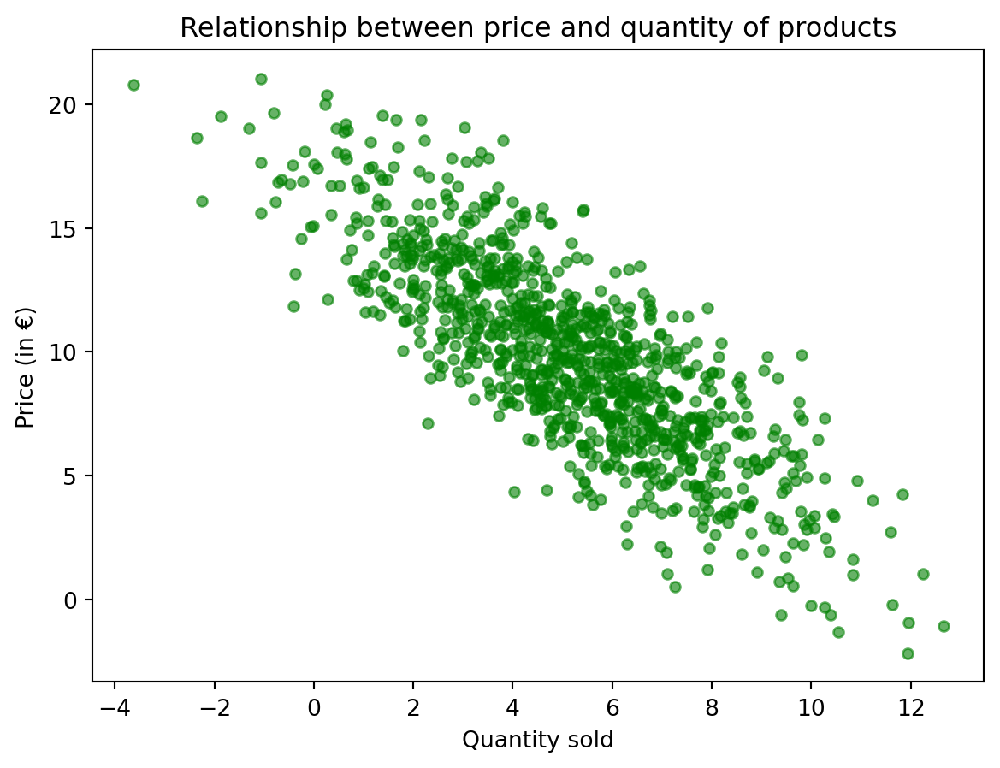
Going further
Once again, many other possibilities are described in the documentation. However, the built-in plotting functionality in Pandas is mainly designed for quick visualization of analyzed data. For more attractive visualizations without needing to write much more code, the Seaborn library is preferable.
Seaborn
Seaborn is a data visualization library that provides a high-level interface for creating attractive statistical graphics. It is also built on Matplotlib and integrates well with Pandas data structures, allowing for more elaborate visualizations than those natively offered by Pandas without requiring significant amounts of code. This makes it an excellent choice for going beyond Pandas’ plotting capabilities while avoiding the complexity of Matplotlib.
Let’s import the Seaborn package. The common practice is to give it the alias sns to avoid code redundancy.
import seaborn as snsExample plots
For the same charts created earlier with Pandas, Seaborn offers much more visually appealing representations. Here are a few examples.
Scatter plot
We can easily add information to a scatter plot, for example, through the color of the points or their style (size, marker, etc.). Let’s analyze the scatter plot of prices against quantity by store where the transaction took place.
sns.scatterplot(data=df_cash, x='Price', y='Quantity', hue='Store', alpha=0.6)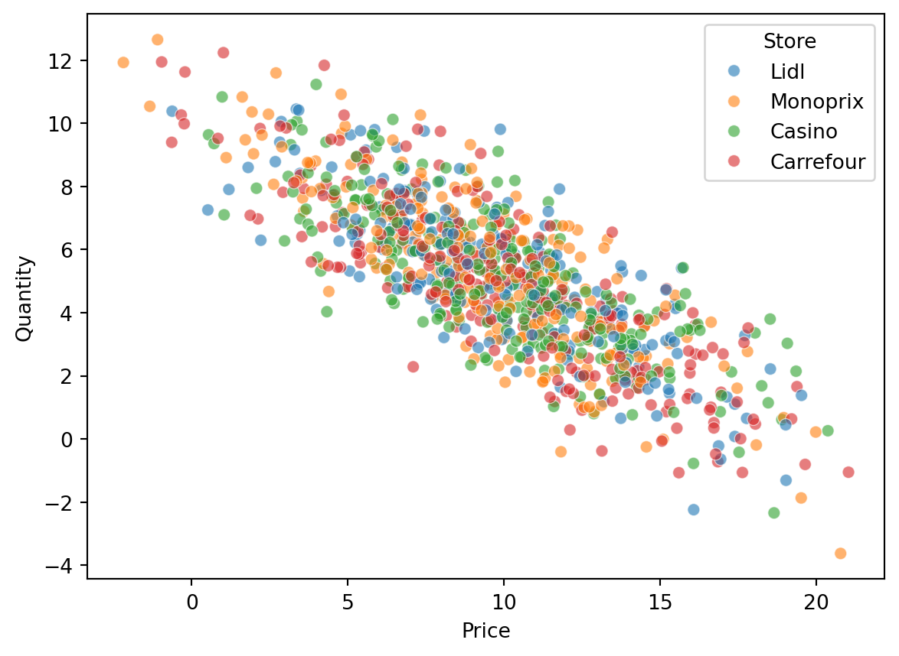
Histogram
With Seaborn, you can easily add a density estimation curve to a histogram. This allows you to visually check the normality of the data.
sns.histplot(df_cash['Price'], kde=True, color='skyblue')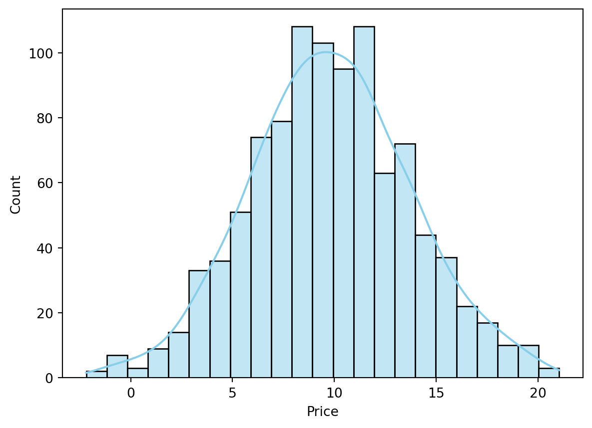
Pair plot
The pair plot allows for analyzing the relationships between two continuous variables by combining a scatter plot and density curves.
subset = df_cash[['Price', 'Quantity', 'Store']]
sns.pairplot(subset, hue='Store')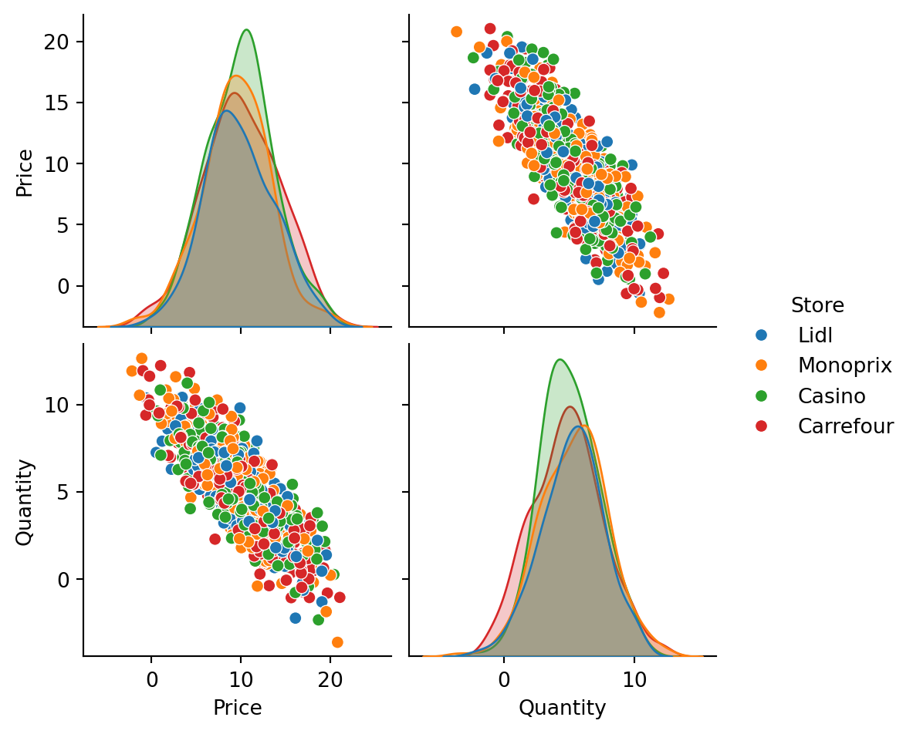
Violin plot
Similar to the box plot, the violin plot adds a density estimation curve to better visualize the masses of the distribution.
sns.violinplot(data=df_cash, x='Store', y='Price', hue="Store")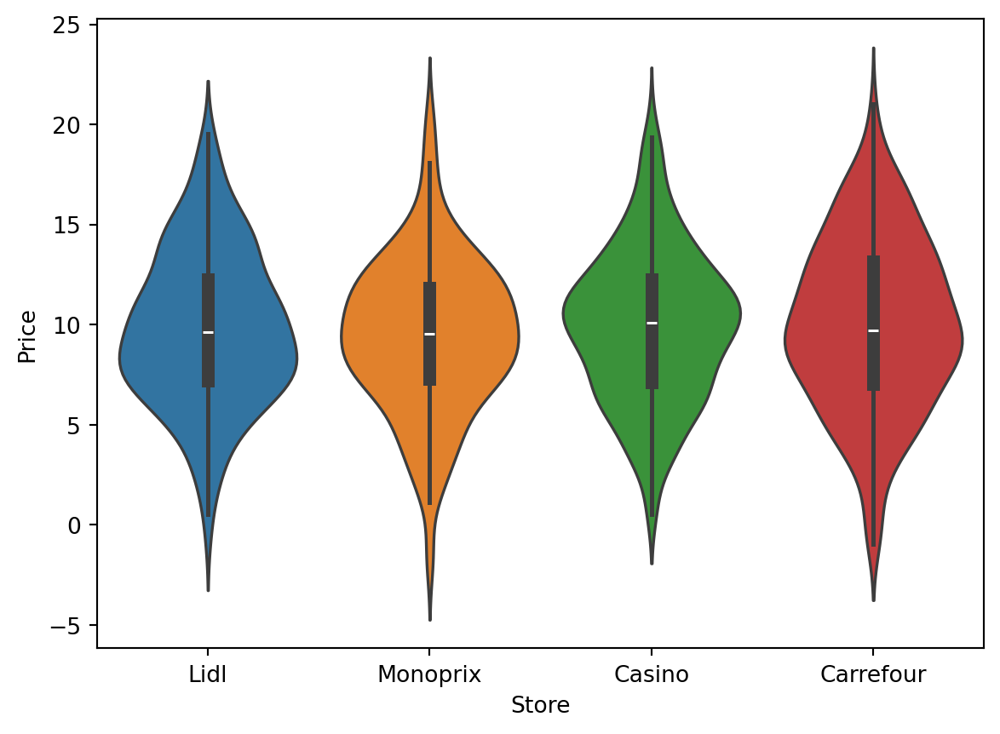
Customization
Like Pandas, Seaborn’s plotting functionality is based on Matplotlib. Again, you can customize the charts by using the plt.xxx functions from Matplotlib.
sns.scatterplot(data=df_cash, x='Price', y='Quantity', hue='Store', alpha=0.6)
plt.title('Relationship between price and quantity by store')Text(0.5, 1.0, 'Relationship between price and quantity by store')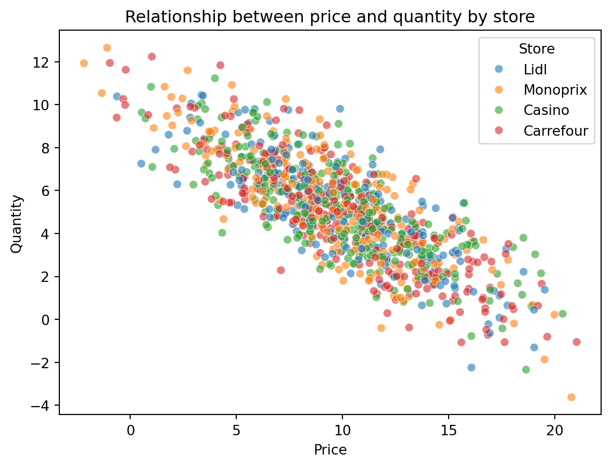
Going further
Seaborn’s possibilities are truly extensive, and the gallery of Seaborn examples illustrates many visually pleasing and easy-to-reproduce possibilities. For more advanced needs, you can consider other graphic libraries depending on the case:
- For maximum customization possibilities (at the cost of some learning curve): Matplotlib, the fundamental visualization library in Python;
- For R users: plotnine, a library that implements the “grammar of graphics” specific to ggplot2;
- For interactive visualization: plotly and bokeh are the most used.